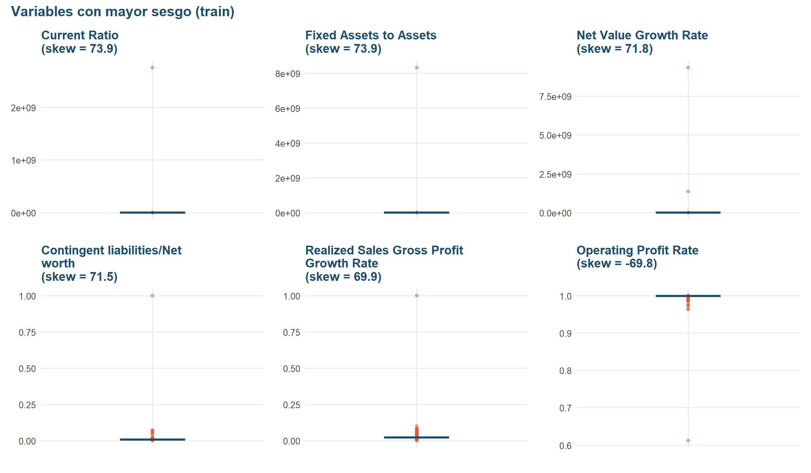
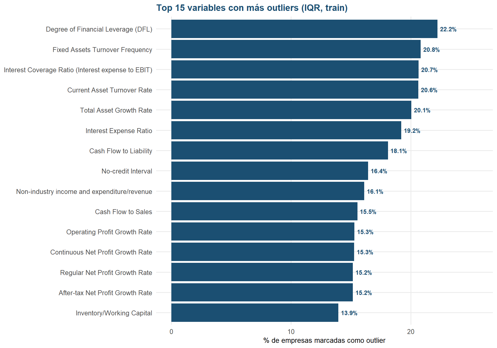

Capítulo 5 Análisis de outliers y sesgo (sobre train)
Antes de pasar al análisis bivariado, es importante identificar qué variables tienen distribuciones muy sesgadas y/o outliers extremos, ya que esto afecta tanto la interpretación visual como la elección de modelos y transformaciones en la fase de Machine Learning.
5.1 Top 10 variables con mayor sesgo, en valor absoluto (train)
# type = 2 replica la fórmula de sesgo "clásica" (similar a pandas .skew())
skew_vals <- sapply(train_df[num_vars], function(x) e1071::skewness(x, na.rm = TRUE, type = 2))
skew_orden <- names(sort(abs(skew_vals), decreasing = TRUE))
top10_skew <- skew_vals[skew_orden[1:10]]
print(round(top10_skew, 2))## Current Ratio Fixed Assets to Assets Net Value Growth Rate
## 73.86 73.86 71.82
## Contingent liabilities/Net worth Realized Sales Gross Profit Growth Rate Operating Profit Rate
## 71.47 69.87 -69.78
## Operating Profit Growth Rate Cash Flow to Sales Working capitcal Turnover Rate
## -67.59 -65.51 -64.67
## After-tax net Interest Rate
## -61.97Las variables presentan valores de sesgo muy altos, tanto positivos como negativos. Esto indica que varias distribuciones están alejadas de una distribución simétrica y pueden presentar valores extremos.
Fixed Assets to Assets, Revenue per person y Net Value Growth Rate presentan el mayor sesgo positivo. Esto indica una fuerte concentración de los datos en ciertos valores y la presencia de observaciones extremas hacia la derecha. Operating Profit Rate, por su parte, suele presentar un sesgo negativo marcado, lo que indica una distribución con una cola pronunciada hacia la izquierda. Otras variables como Contingent liabilities/Net worth y Working capital Turnover Rate también presentan valores de sesgo elevados.
Conclusión: Varias variables presentan un sesgo elevado, lo que sugiere la presencia de distribuciones muy asimétricas y posibles valores extremos. Estas variables deberán revisarse durante el preprocesamiento para determinar si requieren alguna transformación, especialmente si se utilizan modelos sensibles a la escala o a la distribución de los datos.
5.2 Boxplots de las variables más sesgadas
plot_box_skew <- function(var) {
ggplot(train_df, aes(x = "", y = .data[[var]])) +
geom_boxplot(fill = COLOR_MAIN, color = COLOR_MAIN, width = 0.35,
outlier.color = COLOR_RISK, outlier.alpha = 0.5, outlier.size = 1.5) +
labs(title = sprintf("%s\n(skew = %.1f)", str_wrap(var, 28), skew_vals[var]),
x = NULL, y = NULL) +
tema_eda
}
wrap_plots(lapply(top_skew_vars, plot_box_skew), ncol = 3) +
plot_annotation(title = "Variables con mayor sesgo (train)",
theme = theme(plot.title = element_text(face = "bold", size = 15)))
- Fixed Assets to Assets: La mayoría de los valores se concentra cerca de cero, pero aparece un valor extremadamente alto. Esto explica el fuerte sesgo positivo y muestra la presencia de un valor atípico muy marcado.
- Revenue per person: Presenta un comportamiento similar. La mayoría de las observaciones está concentrada en valores bajos, mientras que existe un valor extremadamente alto que distorsiona la distribución.
- Net Value Growth Rate: Casi todos los valores se encuentran cerca de cero, pero se observa un valor muy alejado del resto. Este valor extremo explica gran parte del sesgo positivo de la variable.
- Total income/Total expense: La mayoría de las observaciones se concentra cerca de valores bajos, mientras que aparece un valor cercano a 1 claramente separado del resto. Esto indica una distribución muy asimétrica y la presencia de un posible valor atípico.
- Operating Profit Rate: Los valores están muy concentrados cerca de 1, aunque aparecen algunas observaciones alejadas, principalmente hacia valores inferiores. Esto genera el fuerte sesgo negativo observado anteriormente.
- Contingent liabilities/Net worth: La mayoría de los datos se encuentra cerca de cero, pero aparecen varios valores alejados y uno cercano a 1. Estos valores extremos contribuyen al elevado sesgo positivo.
Conclusión: Los boxplots muestran que las variables con mayor sesgo presentan valores atípicos muy alejados de la mayoría de las observaciones. En varias de ellas, estos valores extremos explican gran parte del sesgo observado. Por ahora no se deberían eliminar automáticamente, ya que primero es necesario determinar si representan errores o situaciones reales de las empresas.
5.3 Top 15 variables con más outliers (regla IQR)
pct_outliers_iqr <- function(x) {
q <- quantile(x, c(0.25, 0.75), na.rm = TRUE)
iqr <- q[2] - q[1]
lower <- q[1] - 1.5 * iqr
upper <- q[2] + 1.5 * iqr
mean(x < lower | x > upper, na.rm = TRUE) * 100
}
outlier_pct <- sort(sapply(train_df[num_vars], pct_outliers_iqr), decreasing = TRUE)
top15_out <- outlier_pct[1:15]
print(round(top15_out, 1))## Degree of Financial Leverage (DFL) Fixed Assets Turnover Frequency
## 22.2 20.8
## Interest Coverage Ratio (Interest expense to EBIT) Current Asset Turnover Rate
## 20.7 20.6
## Total Asset Growth Rate Interest Expense Ratio
## 20.1 19.2
## Cash Flow to Liability No-credit Interval
## 18.1 16.4
## Non-industry income and expenditure/revenue Cash Flow to Sales
## 16.1 15.5
## Operating Profit Growth Rate Continuous Net Profit Growth Rate
## 15.3 15.3
## After-tax Net Profit Growth Rate Regular Net Profit Growth Rate
## 15.2 15.2
## Inventory/Working Capital
## 13.9df_out <- tibble(variable = names(top15_out), pct = as.numeric(top15_out))
ggplot(df_out, aes(x = reorder(variable, pct), y = pct)) +
geom_col(fill = COLOR_MAIN) +
geom_text(aes(label = sprintf("%.1f%%", pct)), hjust = -0.15, size = 3.2,
color = COLOR_MAIN, fontface = "bold") +
coord_flip(clip = "off") +
labs(title = "Top 15 variables con más outliers (IQR, train)",
x = NULL, y = "% de empresas marcadas como outlier") +
expand_limits(y = max(df_out$pct) * 1.15) +
tema_eda
Las variables con mayor proporción de valores atípicos suelen ser Degree of Financial Leverage (DFL), Fixed Assets Turnover Frequency e Interest Coverage Ratio, con alrededor del 20 % de empresas marcadas como outliers. También destacan Current Asset Turnover Rate, Total Asset Growth Rate e Interest Expense Ratio, con porcentajes similares. Las demás variables del top 15 presentan entre aproximadamente 14 % y 18 % de observaciones marcadas como outliers.
En general, varias variables presentan una proporción considerable de valores atípicos. Sin embargo, esto no significa que deban eliminarse automáticamente, ya que pueden representar situaciones financieras reales de algunas empresas. Estos resultados deberán considerarse posteriormente al definir el preprocesamiento de los datos.